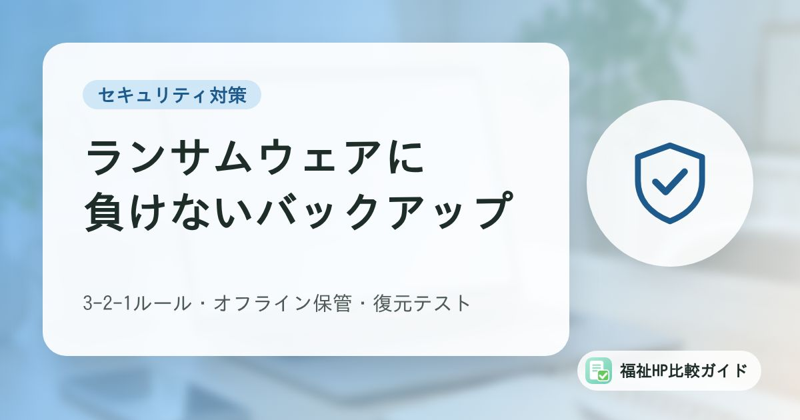

ランサムウェア対策のバックアップ入門｜福祉事業所の記録データを守る3-2-1ルールと復元テスト

「バックアップは取っているから大丈夫」と考えている事業所は少なくありません。しかし、ランサムウェアの被害にあった組織の多くは、バックアップを取っていたのに元に戻せませんでした。この記事では、警察庁の調査結果をもとに、なぜ復元できないのか、小規模な福祉事業所でも取り入れやすいバックアップの考え方を整理します。
この記事でわかること
- 被害組織の多くがバックアップから復元できなかった理由（警察庁の調査）
- 福祉事業所でバックアップの対象にしたいデータの洗い出し方
- 3-2-1ルールとオフライン保管の考え方
- 見落とされがちな「復元テスト」と運用のチェックリスト
「バックアップがあったのに戻せない」が多数派
ランサムウェアは、パソコンやサーバーのデータを暗号化して使えない状態にし、元に戻すことと引き換えに金銭を要求する不正プログラムです。近年は、データを盗んだうえで「支払わなければ公開する」と脅す二重恐喝が多くを占めると、警察庁は説明しています。
警察庁が2026年9月に公表した「令和８年上半期におけるサイバー空間をめぐる脅威の情勢等について」によると、2026年上半期に報告されたランサムウェア被害は123件で、半期として統計開始以来最多でした。被害企業・団体の規模別では中小企業が約6割を占めています。
同じ資料には、被害にあった組織へのアンケート結果として、バックアップに関する数字が載っています。
| 項目（令和8年上半期のアンケート） | 結果 |
|---|---|
| バックアップを取得していた | 有効回答50件のうち44件 |
| バックアップから復元できた | 有効回答40件のうち11件 |
| 復元できなかった | 有効回答40件のうち29件 |
| 復元できなかった理由で最も多いもの | バックアップも暗号化・消去された（29件中14件） |
つまり、ほとんどの組織がバックアップを取っていたにもかかわらず、復元できたのは4分の1程度でした。復元できなかった理由には、バックアップ自体が暗号化・消去されたことのほか、「運用不備」（29件中8件）も挙がっています。過去の年も同じ傾向が続いています。
攻撃者はバックアップを探してから暗号化する
警察庁の資料では、攻撃者がネットワークに侵入したあと、内部を探索して重要なデータやバックアップを物色し、データを盗み出してから暗号化を実行する流れが紹介されています。パソコンから手の届く場所に置いたバックアップは、最初から狙われていると考えたほうが安全です。
福祉事業所で守りたいデータを洗い出す
バックアップを考える前に、「何が失われると業務が止まるか」を書き出しておきます。福祉事業所では、例えば次のようなデータがあります。
| データの例 | 失われたときの影響 | 置き場所の例 |
|---|---|---|
| 利用者の基本情報・受給者証の情報 | サービス提供・請求ができない | 記録ソフト、表計算ファイル |
| 個別支援計画・アセスメント・支援記録 | 支援の継続、実地指導への対応が困難に | 記録ソフト、共有フォルダ |
| サービス提供実績・請求データ | 報酬の請求が遅れる | 請求ソフト |
| 職員の勤務表・資格証の写し | 人員配置の確認ができない | 共有フォルダ |
| 契約書・重要事項説明書の控え | 契約内容の確認ができない | 紙とスキャンデータ |
| ホームページのデータ | 情報発信が止まる | サーバー、制作会社 |
障害の有無や病歴など、利用者の情報の多くは個人情報保護法の「要配慮個人情報」にあたります。こうしたデータは「消えたら困る」だけでなく、「盗まれたら報告が必要になる」データでもあります（後述）。
洗い出しの際は、データごとにどこに保存されているかと誰が管理しているかも一緒に書き出しておくと、バックアップの抜け漏れに気づきやすくなります。クラウドの記録ソフトを使っている場合は、サービス提供会社のバックアップの範囲と保存期間も確認しておきましょう。
3-2-1ルールとオフライン保管の考え方
バックアップの考え方として広く知られているのが「3-2-1ルール」です。
| 数字 | 意味 | 福祉事業所での例 |
|---|---|---|
| 3 | データを3つ持つ（元データ＋複製2つ） | パソコン上の元データ、外付けディスク、クラウド |
| 2 | 2種類以上の媒体に保存する | 外付けディスクとクラウドストレージ |
| 1 | 1つは別の場所に保管する | 法人本部、別の事業所、クラウド |
ランサムウェア対策としては、これに加えてネットワークから切り離した（オフラインの）複製を1つ持つことが重要です。警察庁も「バックアップはなるべくこまめに取得し、ネットワークから切り離してオフラインで保存する」ことを推奨しています。
小規模な事業所で取り入れやすい方法の例は次のとおりです。
- 外付けディスクを2台用意して交互に使う：バックアップが終わったらケーブルを外し、鍵のかかる場所に保管する。1台は別の場所に置く
- クラウドの「版の履歴（バージョン履歴）」を活用する：上書きや暗号化されたファイルでも、以前の版に戻せる機能があるか確認する
- 共有フォルダ（NAS）の世代管理機能を使う：機器によっては、一定期間前の状態を残す機能（スナップショット）がある。ただし、管理者アカウントが乗っ取られると消される可能性があるため、管理用パスワードは別にする
「同期」と「バックアップ」は別物
パソコンとクラウドを自動で同期するサービスは便利ですが、パソコン上のファイルが暗号化されると、その状態がクラウドにも同期されることがあります。同期は「最新の状態をそろえる仕組み」であり、「過去の状態に戻す仕組み」ではありません。過去の版を残せる設定になっているかを確認しましょう。
見落とされがちな復元テスト
警察庁の調査で「運用不備」が復元できなかった理由に挙がっているように、バックアップは戻せることを確かめて初めて意味があります。警察庁は、被害を想定した訓練の中で、バックアップによる復旧手順も確認しておくことを推奨しています。
復元テストでは、次の点を確かめます。
- バックアップから、実際に別のパソコンや別のフォルダへファイルを戻せるか
- 戻したファイルが開けるか（記録ソフトや請求ソフトのデータは、ソフト側で読み込めるか）
- どの時点のデータまで戻るか（最後にバックアップを取った日はいつか）
- 戻すのにどのくらい時間がかかるか、手順を知っている職員は誰か
一度に全部を試す必要はありません。例えば「毎月1回、ファイルを1つ選んで戻してみる」「年に1回は記録ソフトのデータを丸ごと戻す手順を確認する」など、続けられる形で決めておくことが大切です。手順は紙にも印刷して保管しておくと、パソコンが使えないときにも参照できます。
バックアップ運用のチェックリスト
自分たちの事業所の状況を確認してみましょう。
| 確認項目 | チェック |
|---|---|
| 守るべきデータと保存場所の一覧がある | □ |
| バックアップの担当者と代理の担当者が決まっている | □ |
| バックアップの頻度が決まっている（例：毎日・毎週） | □ |
| 少なくとも1つはネットワークから切り離して保管している | □ |
| 少なくとも1つは別の場所（本部・クラウド等）にある | □ |
| 複数世代（過去の時点）のバックアップを残している | □ |
| 定期的に復元テストをしている | □ |
| 復元の手順書が紙でも保管されている | □ |
| バックアップ機器の管理用パスワードは使い回していない | □ |
| クラウドサービスのバックアップ範囲と保存期間を確認した | □ |
あわせて、バックアップは「被害のあとに戻す」ための対策であり、侵入そのものを防ぐ対策ではない点も押さえておきましょう。警察庁の資料では、侵入経路はVPN機器が約5割を占めるとされています。機器やパソコンの更新プログラムの適用、推測されにくいパスワードと多要素認証の設定など、入口の対策と組み合わせることが前提です。ホームページについての対策は「福祉事業所のホームページが狙われている」も参考にしてください。
被害にあったときに知っておきたいこと
万一ランサムウェアの被害が疑われたら、警察庁は次のような対応を案内しています。
- 感染したパソコン等のLANケーブルを抜く、無線をオフにするなどしてネットワークから隔離する（調査に必要な記録が消えることがあるため、電源は落とさない）
- 都道府県警察のサイバー犯罪相談窓口に通報・相談する
- 侵入経路や被害の範囲を調べ、同じ経路からの再被害を防ぐ
このとき、バックアップ用のディスクを慌ててつながないことも大切です。原因がわからないうちに接続すると、バックアップまで暗号化されるおそれがあります。
また、個人情報保護委員会は、ランサムウェア等により個人データが暗号化され復元できなくなった場合を、報告が必要となる事態の例に挙げています。不正の目的で行われたおそれがある漏えい等は、まず速やかに報告し、発覚日から60日以内に報告することが求められています。指定権者（自治体）への事故報告が必要かどうかも確認しましょう。初動の流れは「ホームページが改ざん・乗っ取りされたときの初動対応マニュアル」でも整理しています。
業務継続計画（BCP）とあわせて考える
障害福祉サービス事業所では、感染症や自然災害を想定した業務継続計画の策定が求められています。警察庁は、サイバー攻撃を想定したBCPを準備し、対処の流れや警察等の連絡先を整理しておくことも推奨しています。既存のBCPに「データが使えなくなったときの手順」を書き加えておくと、紙での記録への切り替えなども含めて検討しやすくなります。
まとめ
警察庁の調査では、ランサムウェアの被害にあった組織の多くがバックアップを取っていたものの、復元できたのは4分の1程度にとどまりました。主な原因は、バックアップ自体の暗号化・消去と、運用の不備です。
福祉事業所でまず取り組みたいのは、守るべきデータの洗い出し、ネットワークから切り離したバックアップの用意、そして定期的な復元テストの3つです。高価な仕組みでなくても、外付けディスクの交互運用やクラウドの版の履歴などを組み合わせれば、備えは大きく変わります。担当者を決め、無理なく続けられる手順にしておきましょう。
よくある質問
クラウドの記録ソフトを使っていれば、自分たちでバックアップを取る必要はありませんか？
サービス提供会社がサーバー側でバックアップを取っていることが一般的ですが、保存期間や、誤って削除・上書きしたデータを利用者側の依頼で戻せるかどうかはサービスによって異なります。契約内容や利用規約で確認し、必要に応じてデータの書き出し（エクスポート）を定期的に行っておくと安心です。
外付けハードディスクを常につないで自動バックアップしています。これで十分ですか？
常に接続している外付けディスクや共有フォルダ（NAS）は、パソコンがランサムウェアに感染すると一緒に暗号化されるおそれがあります。自動バックアップ自体は便利なので続けつつ、少なくとも1つはバックアップ後にケーブルを外して保管するなど、ネットワークから切り離した複製を用意することをおすすめします。
ランサムウェアの被害にあったら、身代金を払えばデータは戻りますか？
支払ってもデータが戻る保証はなく、盗まれたデータが公開されないという保証もありません。被害が疑われたら、感染した機器をネットワークから切り離し、都道府県警察のサイバー犯罪相談窓口などへ早めに相談してください。利用者の個人データが含まれる場合は、個人情報保護委員会への報告が必要になることがあります。
参考資料・出典
- 警察庁「令和８年上半期におけるサイバー空間をめぐる脅威の情勢等について」（本文9〜11頁、統計編147〜149頁（バックアップの取得状況・復元結果・復元できなかった理由））
- 警察庁「ランサムウェア被害防止対策」
- 個人情報保護委員会「漏えい等の対応とお役立ち資料」
- IPA「情報セキュリティ10大脅威 2026」
- IPA「中小企業の情報セキュリティ対策ガイドライン」
- 厚生労働省「障害福祉サービス事業所等における自然災害発生時の業務継続ガイドライン等について」
制度・料金・統計は改定される場合があります。最新の内容は各出典の公式情報でご確認ください。